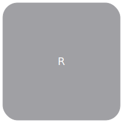

.
Modelica
.
Fluid
.
Dissipation
.
Utilities
.
Types
Information
Package for types
Contents
Name
Description

DarcyFrictionFactor
FrictionalResistanceCoefficient
LocalResistanceCoefficient
PressureLossCoefficient
TwoPhaseFrictionalPressureLoss
Roughness
TwoPhaseHeatTransferTarget
PressureLossTarget
GeometryOfInternalFlow
kc_evenGap
kc_general
HeatTransferBoundary
MassOrVolumeFlowRate
VoidFractionApproach
OrificeGeometry
ValveGeometry
ValveCoefficient
FluidFlowRegime
HTXGeometry_flatTubes
HTXGeometry_roundTubes
MolarMass_gpmol
Generated at 2015-08-04T10:18:23Z by
OpenModelica
OpenModelica 1.9.3~dev-547-g0ef9219